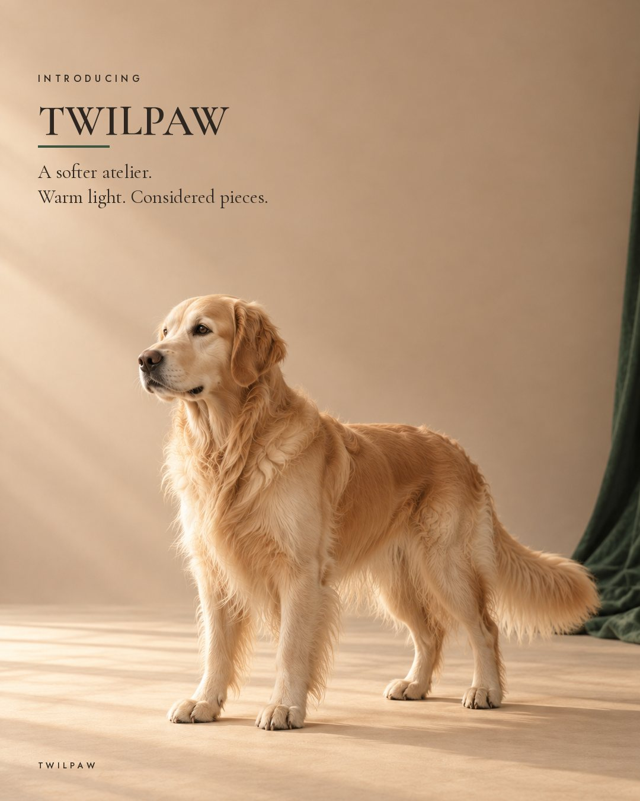
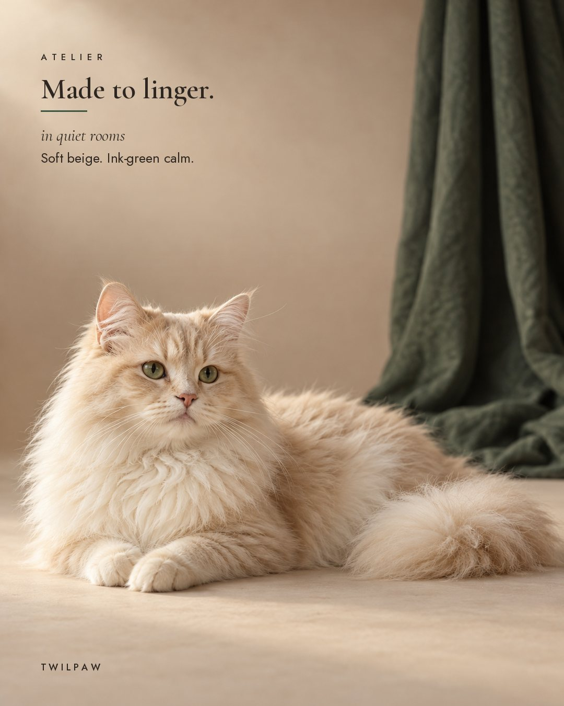
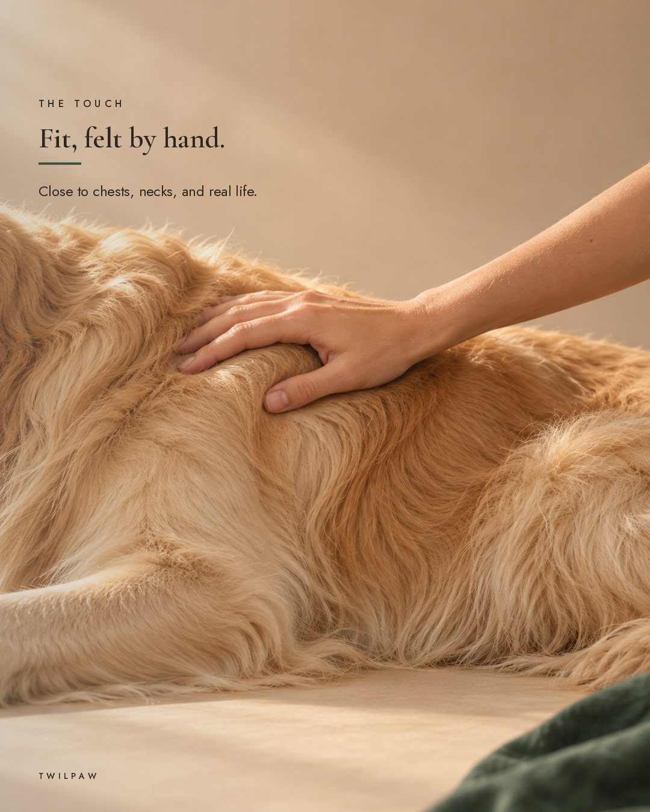
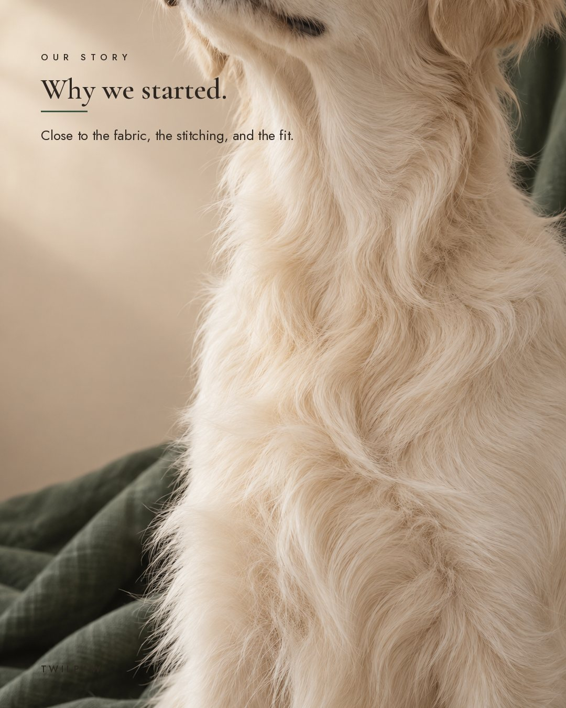

帖子详情页
valepaw.coTwilpaw
···




♡💬➤🔖
valepaw.co Introducing Twilpaw.
We started close to the fabric, the stitching, and the fit, and with the people who share their days with dogs and cats.
What they taught us shaped everything: fit comes before fashion, materials should hold up to real life, and a good piece is one that gets worn again and again. No costume seasons. No throwaway pieces.
Twilpaw is apparel and accessories for dogs and cats. Warm light, quiet rooms, considered pieces. Our first collection is on the way.
To our first followers: you're here before anything else. Follow along for early access to our first collection and a private welcome offer, shared here first.
主页九宫格
1帖子0粉丝0关注
Twilpaw | Pet Apparel & Accessories
Premium apparel & accessories for dogs and cats 🐾
Cozy knits · Harnesses · Collars & more
Premium apparel & accessories for dogs and cats 🐾
Cozy knits · Harnesses · Collars & more
编辑主页分享主页
▦▶👤
❐